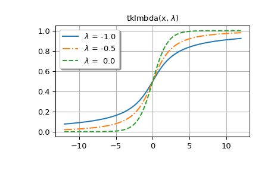
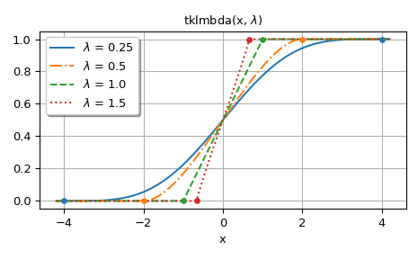

scipy.special.tklmbda#
- scipy.special.tklmbda(x, lmbda, out=None) = <ufunc 'tklmbda'>#
Cumulative distribution function of the Tukey lambda distribution.
- Parameters:
- x, lmbdaarray_like
Parameters
- outndarray, optional
Optional output array for the function results
- Returns:
- cdfscalar or ndarray
Value of the Tukey lambda CDF
See also
scipy.stats.tukeylambdaTukey lambda distribution
Examples
>>> import numpy as np >>> import matplotlib.pyplot as plt >>> from scipy.special import tklmbda, expit
Compute the cumulative distribution function (CDF) of the Tukey lambda distribution at several
xvalues forlmbda= -1.5.>>> x = np.linspace(-2, 2, 9) >>> x array([-2. , -1.5, -1. , -0.5, 0. , 0.5, 1. , 1.5, 2. ]) >>> tklmbda(x, -1.5) array([0.34688734, 0.3786554 , 0.41528805, 0.45629737, 0.5 , 0.54370263, 0.58471195, 0.6213446 , 0.65311266])
When
lmbdais 0, the function is the logistic sigmoid function, which is implemented inscipy.specialasexpit.>>> tklmbda(x, 0) array([0.11920292, 0.18242552, 0.26894142, 0.37754067, 0.5 , 0.62245933, 0.73105858, 0.81757448, 0.88079708]) >>> expit(x) array([0.11920292, 0.18242552, 0.26894142, 0.37754067, 0.5 , 0.62245933, 0.73105858, 0.81757448, 0.88079708])
When
lmbdais 1, the Tukey lambda distribution is uniform on the interval [-1, 1], so the CDF increases linearly.>>> t = np.linspace(-1, 1, 9) >>> tklmbda(t, 1) array([0. , 0.125, 0.25 , 0.375, 0.5 , 0.625, 0.75 , 0.875, 1. ])
In the following, we generate plots for several values of
lmbda.The first figure shows graphs for
lmbda<= 0.>>> styles = ['-', '-.', '--', ':'] >>> fig, ax = plt.subplots() >>> x = np.linspace(-12, 12, 500) >>> for k, lmbda in enumerate([-1.0, -0.5, 0.0]): ... y = tklmbda(x, lmbda) ... ax.plot(x, y, styles[k], label=f'$\lambda$ = {lmbda:-4.1f}')
>>> ax.set_title('tklmbda(x, $\lambda$)') >>> ax.set_label('x') >>> ax.legend(framealpha=1, shadow=True) >>> ax.grid(True)
The second figure shows graphs for
lmbda> 0. The dots in the graphs show the bounds of the support of the distribution.>>> fig, ax = plt.subplots() >>> x = np.linspace(-4.2, 4.2, 500) >>> lmbdas = [0.25, 0.5, 1.0, 1.5] >>> for k, lmbda in enumerate(lmbdas): ... y = tklmbda(x, lmbda) ... ax.plot(x, y, styles[k], label=f'$\lambda$ = {lmbda}')
>>> ax.set_prop_cycle(None) >>> for lmbda in lmbdas: ... ax.plot([-1/lmbda, 1/lmbda], [0, 1], '.', ms=8)
>>> ax.set_title('tklmbda(x, $\lambda$)') >>> ax.set_xlabel('x') >>> ax.legend(framealpha=1, shadow=True) >>> ax.grid(True)
>>> plt.tight_layout() >>> plt.show()
  The CDF of the Tukey lambda distribution is also implemented as the
cdfmethod ofscipy.stats.tukeylambda. In the following,tukeylambda.cdf(x, -0.5)andtklmbda(x, -0.5)compute the same values:>>> from scipy.stats import tukeylambda >>> x = np.linspace(-2, 2, 9)
>>> tukeylambda.cdf(x, -0.5) array([0.21995157, 0.27093858, 0.33541677, 0.41328161, 0.5 , 0.58671839, 0.66458323, 0.72906142, 0.78004843])
>>> tklmbda(x, -0.5) array([0.21995157, 0.27093858, 0.33541677, 0.41328161, 0.5 , 0.58671839, 0.66458323, 0.72906142, 0.78004843])
The implementation in
tukeylambdaalso provides location and scale parameters, and other methods such aspdf()(the probability density function) andppf()(the inverse of the CDF), so for working with the Tukey lambda distribution,tukeylambdais more generally useful. The primary advantage oftklmbdais that it is significantly faster thantukeylambda.cdf.